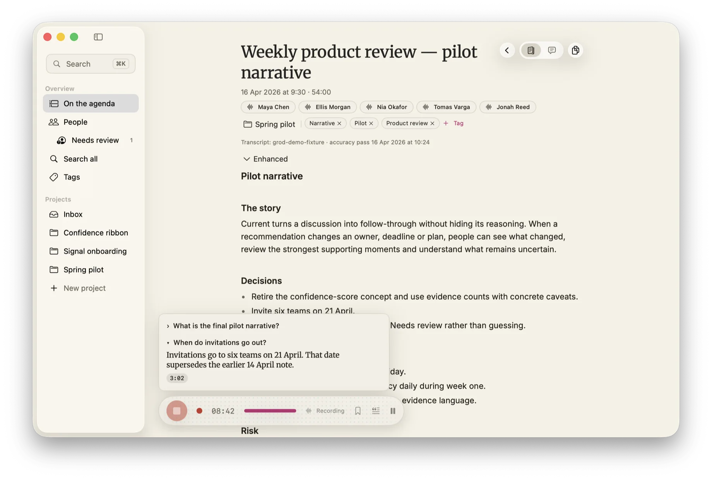
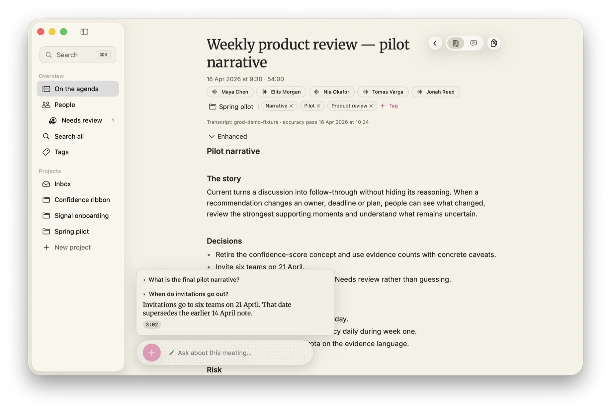
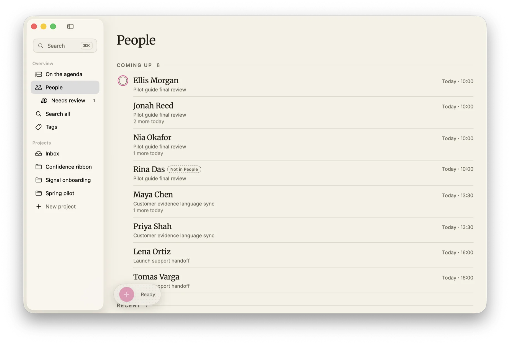
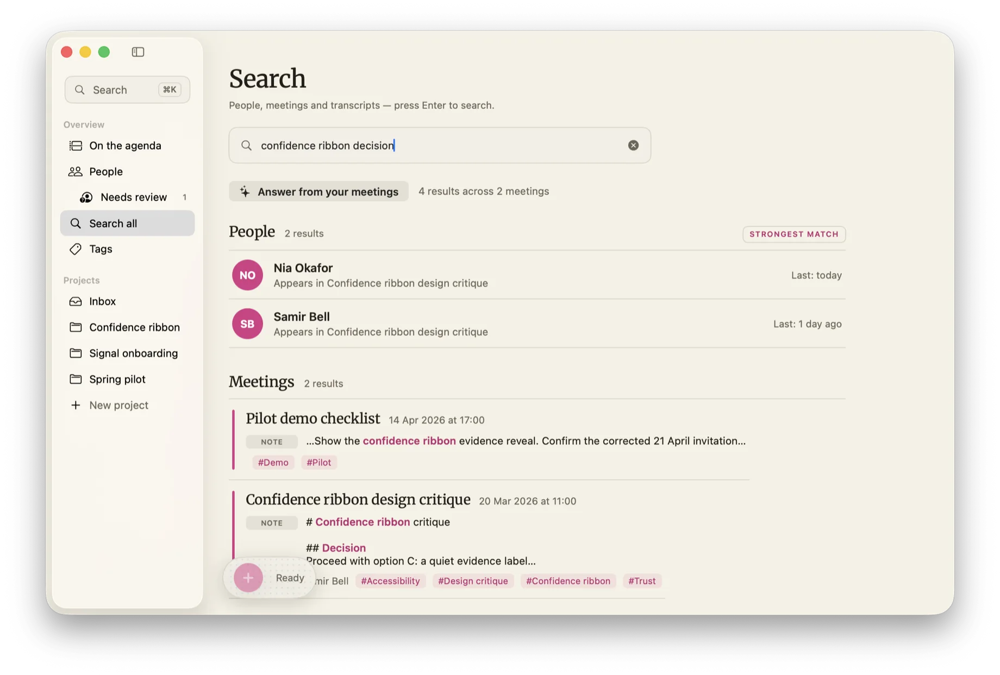

GRØD records both sides of a call and produces the briefing — summary, decisions, action items, open questions — on this machine, every time. It learns voices, remembers people, and answers questions across every meeting on file. No cloud. No account. No bot in your call. This document specifies how, and what enforces it.
Nothing joins your meeting or announces itself. GRØD listens on your Mac — your mic, plus the audio your conference app is already playing — so it works with Zoom, Meet, Teams, a huddle, a browser tab, or a conversation across the table. Capture, transcription, speaker separation, and the intelligence all run inside the boundary drawn below.
A boundary you can test — run it in airplane mode, or put a network monitor on it. See §6.

Fig. 2.2 — Capture in operation. No bot joins; nothing is announced.
Nobody re-reads an hour of talk. What you need is the distillation: what was decided, what you owe, what's still open. The moment your meeting ends, GRØD writes it — one calm, editable document, with your own notes woven in and never overwritten. Revert is always one click.
Your notes stay yours. The AI enriches; it never replaces.

GRØD learns the voices you meet. Label a speaker one time and they're recognized in every meeting — past and future. People become a quiet directory of who you talk to: what's coming up, what you last discussed, every conversation you've shared.

Fig. 4.1 — The directory.
One shortcut searches every meeting you've ever had — by keyword and by meaning. Ask a question and get an answer with citations; click one and land on the exact moment it was said. A knowledge base that compounds, without a server in sight.

Fig. 5.1 — Retrieval. One query, resolved across people, meetings and transcripts.
None. There is no GRØD server — nothing the app captures has anywhere of ours to go. Enforcement: structural. Data cannot leak to infrastructure that does not exist.
Exactly one file in the app can open a connection — used only to download optional transcription models you ask for. Enforcement: a source-scan test fails the build if a second one appears.
Every downloaded file is SHA-256-verified against a pinned release before it's trusted. Enforcement: HTTPS to two allowed domains; dependencies are forced offline too.
"Recording removed" is only ever said after it's proven true. Enforcement: confirmation follows verification. Optional 90-day auto-purge removes audio only — transcripts and notes always survive.
None. No analytics, no phone-home, no account to attach them to. Enforcement: even local diagnostics use a closed vocabulary that cannot contain your content.
We can't show you the source, so we show you behavior: switch Wi-Fi off and GRØD keeps working; watch the network and nothing leaves.
7.0 · Operator notice · end of operations
"Breathe — that was your last meeting today."
GRØD's actual words when your afternoon empties. Calm is a feature.
GRØD is in pre-launch hardening — the bar for 1.0 is "never loses a meeting, and a stranger can install it." If you'd like in early, say hello and we'll save you a seat.
No form, no tracker — the button is just email. The only outbound request on this page is the one you write yourself. Fitting, we thought.